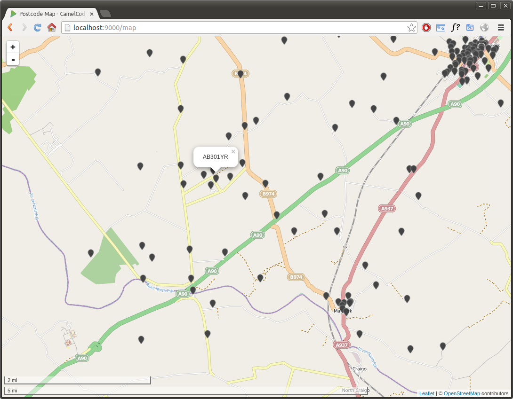

CamelCode
A tech demo built using Play Framework 2.2 (java) that imports the CodePoint Open UK postcode dataset and offers a Geocoding RESTful API and a map. It also demonstrates how Google Guice can be integrated in a Play Framework Java application.
Development sponsored by Coen Recruitment. Follow @analytically for updates.
Requirements
- JDK 6 or later
- Play Framework 2.2
- MongoDB
Setup
Edit conf/application.conf and point it to a MongoDB installation (defaults to localhost), and execute
play run
Then drop the CodePoint Open CSV (scroll halfway down, 20mb)
files in the codepointopen directory.
After each file is imported, it will be moved to the codepointopen/done directory.
Then visit http://localhost:9000 and you should see the welcome screen. Check out the server metrics or the map.
REST API and JSON
GET http://localhost:9000/latlng/POSTCODE to geocode a UK postcode. Response will be JSON:
{"latitude":51.505615,"longitude":-2.6120315}
Screenshots

Technology
- Play Framework 2.2, as web framework
-
Apache Camel to process and monitor the
codepointopendirectory and to tell the actors about the postcodes (split(body())) - Akka provides a nice concurrency model to process the 1.7 million postcodes in under one minute on modern hardware
- GeoTools converts the eastings/northings to latitude/longitude
- Guice for Dependency Injection (not too much to inject yet though)
- Metrics for metrics
- MongoDB as database with two-dimensional geospatial indexes (see Geospatial Indexing)
- Morphia for 'Object-Document Mapping'
- Leaflet for the map
- Twitter Bootstrap and Font Awesome for the UI
License
Licensed under the WTFPL.
This data contains Ordnance Survey data © Crown copyright and database right 2013. Code-Point Open contains Royal Mail data © Royal Mail copyright and database right 2012. Code-Point Open and ONSPD contains National Statistics data © Crown copyright and database right 2013.
OS data may be used under the terms of the OS OpenData licence.